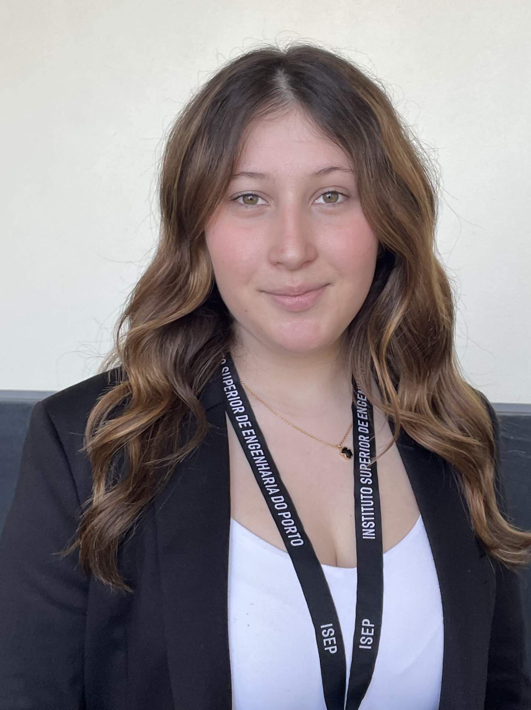

Análise de Dados & Tecnologia
Tratamento, interpretação e visualização de dados para apoio à decisão.
Finalista de Engenharia de Sistemas no ISEP, com interesse nas áreas de Gestão Industrial, Logística, Análise de Dados e Gestão de Projetos. Motivada pela aplicação de metodologias analíticas e tecnologias de apoio à decisão na otimização de operações e cadeias de abastecimento.

Ao longo do meu percurso académico, desenvolvi competências multidisciplinares que combinam tecnologia, gestão e pensamento analítico, através de projetos ligados à melhoria contínua, investigação operacional, sistemas de informação e apoio à decisão. Procuro aplicar dados e ferramentas tecnológicas para desenvolver soluções mais eficientes, estruturadas e orientadas para resultados.
Engenharia de Sistemas
Instituto Superior de Engenharia do Porto
Programa Erasmus+
República Checa
Dados · Processos · Projetos
Decisão · Resultados
Competências técnicas, analíticas e interpessoais desenvolvidas através de projetos académicos, experiência profissional e mobilidade internacional.
Tratamento, interpretação e visualização de dados para apoio à decisão.
Análise de processos, identificação de oportunidades de melhoria e definição de indicadores.
Planeamento, acompanhamento e controlo de projetos em contextos académicos e colaborativos.
Instituto Superior de Engenharia do Porto. Formação em sistemas de informação, gestão de operações, logística, análise de dados, gestão de projetos e otimização.
University of Hradec Králové, República Checa. Experiência internacional com desenvolvimento de autonomia, comunicação intercultural e adaptação a novos contextos.
Escola Secundária Eça de Queirós, Póvoa de Varzim.
Projetos selecionados pela ligação a operações, sistemas de informação, otimização, análise de dados e gestão de projetos, sem exposição de resultados sensíveis.
Projeto em contexto empresarial focado no estudo de recolhas ao balcão e no apoio ao dimensionamento de um sistema baseado em lockers automatizados.
Projeto multidisciplinar em parceria com a Tlantic, orientado para a criação de uma solução web de gestão de colaboradores, equipas e perfis de utilizador.
Projeto focado no desenvolvimento de um modelo matemático e computacional para otimização de percursos pedestres com restrições de distância, tempo e abastecimento.
Projeto académico centrado no planeamento completo de um evento, incluindo estruturação de tarefas, cronograma, orçamento, logística, risco e controlo de desempenho.
Adaptação a contextos multiculturais e desenvolvimento de autonomia, responsabilidade e comunicação intercultural.
Organização de eventos académicos e colaboração com equipas multidisciplinares no Departamento de Comunicação e Imagem.